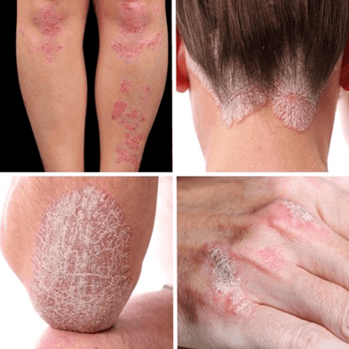

¡Avance revolucionario! ¡Di “NO” a la psoriasis ahora mismo!
La psoriasis es una enfermedad de la piel asociada con la aceleración de la división y el recambio de las células de la superficie de la piel. Las manifestaciones cutáneas más comunes de la psoriasis son manchas rojas y pápulas, placas blancas plateadas, descamación intensa de la piel. Por lo general, las manchas aparecen primero, luego se transforman en pápulas y luego en placas plateadas. Estas lesiones pueden variar en tamaño y se encuentran principalmente en el cuero cabelludo, la espalda, la parte posterior de la cabeza, las manos, las rodillas y los pies.
La psoriasis puede comenzar a cualquier edad, pero más a menudo a los 20-30 o 50-60 años. Los pacientes se caracterizan por la aparición repentina de áreas escamosas de enrojecimiento de la piel, antecedentes familiares de psoriasis, infección reciente por estreptococo de la garganta o infección viral o tomar un medicamento antipalúdico, ya sea trauma o estrés severo.
Y aunque no es una enfermedad contagiosa, las personas con psoriasis a menudo son marginadas y excluidas de la sociedad, siendo discriminadas porque su piel se ve de alguna manera mal. El 84% de los pacientes con psoriasis sufren humillaciones de algún tipo.
La psoriasis en placas clásica se manifiesta por áreas rojas de la piel con picazón y descamación excesiva. Las lesiones ocurren en el lado extensor (externo) de las articulaciones y el cuero cabelludo. La mayoría de los pacientes se avergüenzan de estas placas, usan ropa cerrada y evitan exponer las áreas afectadas.
Hasta el 76% de los pacientes con psoriasis notan que aparecen nuevas placas en los sitios de la lesión después de 7-14 días, este es el fenómeno de Koebner. En algunos casos, es reversible, pero más a menudo las placas permanecen para siempre. Hasta el 20% de los pacientes con psoriasis sufren inflamación de las articulaciones: artritis psoriásica con dolor insoportable, rigidez (disminución del rango de movimiento) y deformidad.
En la encuesta, Carmen (45) cuenta cómo esta enfermedad cambió su condición y casi perdió la esperanza.
"Yo era una mujer normal que vivía feliz con su hija y su esposo. Como gerente de una tienda de ropa, no tuve problemas con el dinero. Sin embargo, cuando supe que mi hija tenía una enfermedad grave, todo cambió. Después de eso, siguió un período terrible, lleno de tratamientos e intervenciones quirúrgicas, toda esta situación tuvo un impacto negativo en mí también.
Después de unos meses, comenzó a picar en mi cuero cabelludo, seguido de parches de piel engrosados, escamosos y rojizos. Luego noté que todas esas placas escamosas se hicieron más grandes. Como resultado, aprendí sobre la psoriasis bastante tarde.
Comencé a comprar en las farmacias todo tipo de remedios para la psoriasis: cremas, aerosoles, cápsulas y ungüentos... los métodos alternativos tampoco me áyudarono. ¿Qué resultados? ¡Absolutamente ninguno! Mi condición empeoró cada vez más... La enfermedad comenzó a afectar mi vida y mi sentido de mí misma. Me avergonzaba de mi apariencia y cada día me volvía más irritable y agresiva.
Mi familia y amigos me evitaron, la gente literalmente se me alejaba en la calle. Pensé que era contagioso e inmediatamente fui a nuestro médico de familia. Ella confirmó la psoriasis, lo más probable es que la haya adquirido por mucho estrés y exceso de trabajo en los últimos meses. ¿Y ahora qué? No había tiempo para resolver problemas personales, así que compré una crema prescrita por un médico. Pero, desafortunadamente, no funcionó en absoluto.
Desde entonces, han pasado varios años, mi hija se ha recuperado. Sin embargo, el problema de la psoriasis no ha ido a ninguna parte. Probé muchos métodos diferentes, pero ninguno de ellos funcionó, no encontré una manera efectiva de vencer la psoriasis... Hasta hace 4 meses asistí a una reunión benéfica sobre enfermedades autoinmunes. En ella se presentó un nuevo producto: la crema-gel .
Me impresionaron los que usaron este producto y lo recomendaron con confianza. La también reconocida experta en dermatología Aitana Molina Prieto ha confirmado que es un remedio revolucionario con excelentes efectos después del primer curso. El producto está compuesto sólo por ingredientes 100% naturales (extracto de abedul y Chaga, aceite de nuez de macadamia, escualeno) y modernos complejos innovadores Biophilic™ h MB y SK-INFLUX® Evolve MB. Y el gel-crema tiene un efecto antimicrobiano, antiinflamatorio y antioxidante, promoviendo la regeneración de la piel.
Le pregunté dónde podía comprar y la enfermera me dio un enlace al sitio web oficial del fabricante. Inmediatamente ordené 3 cursos de , ya que el precio era muy atractivo. Después de unos días, recibí el gel-crema y comencé a usarlo. Solo una semana después, noté los primeros cambios: las placas disminuyeron, algunas costras en el cuero cabelludo se curaron. Y después de 3 cursos de recepción, las costras con picazón desaparecieron.
Sé que es difícil de creer. Pero en mi experiencia personal, hizo un milagro. Ya había perdido la esperanza de deshacerme de todas las costras y escamas en mi piel y nunca pensé que volvería a usar faldas cortas o bikinis. Soñaba con recuperar mi cuerpo limpio y hermoso. ¡Pero al final lo hice! ¡Encontré el remedio adecuado y gané la psoriasis!
Recientemente compré de nuevo en el sitio web oficial con un descuento del -50%, ¡ya para la prevención! Solo allí encontrarás el verdadero . No lo pida en otro lugar, ya que hay muchas falsificaciones en las redes que pueden ser dañinas.